💡 超五百人出走，两百余人年入千万：新东方人才外流真相
New Oriental Talent Drain: 500+ Leave, 200+ Become Millionaires
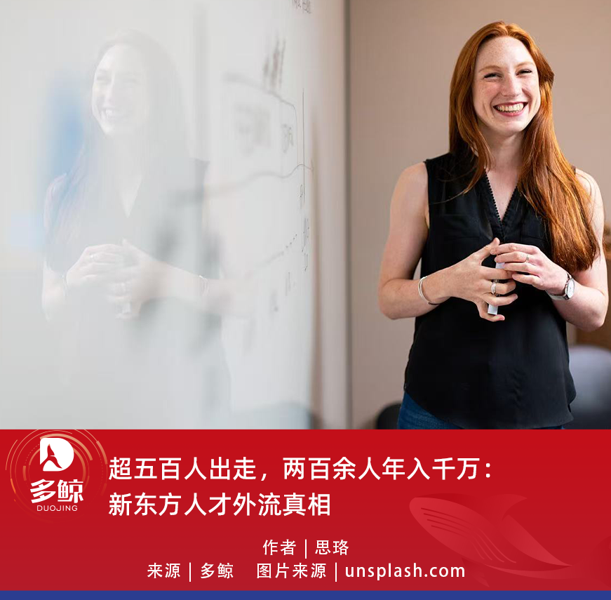
2026 年 5 月 15 日，俞敏洪在公开场合谈及新东方的人才流失attrition[əˈtrɪʃn] n. 人才流失问题时坦承，公司长期以来因宽松管理导致内部纠纷不断，但与此同时，也走出了大量创业者。他透露，离职创业的员工已超过 500 人，其中 200 多人创立了年收入千万级规模scale[skeɪl] n. 规模的企业。「人才talent[ˈtælənt] n. 人才不是被捆住翅膀的鸟。」俞敏洪这样形容describe[dɪˈskraɪb] v. 形容；描述新东方与人才之间的关系。
一个月前，东方甄选刚经历核心主播streamer[ˈstriːmə(r)] n. 主播集体出走。明明、天权、中灿、林林相继离职resign[rɪˈzaɪn] v. 离职，几人的公开表态均将矛头指向内部管理变革。与此同时，东方甄选 2026 财年中期财报显示，公司营收revenue[ˈrevənjuː] n. 营收 23.12 亿元，净利润 2.39 亿元，成功扭亏为盈。
一边是核心人才持续流失，一边是业绩强劲增长，这个悖论paradox[ˈpærədɒks] n. 悖论几乎浓缩了新东方二十多年来最特殊的一面：既是中国教育行业最大的「人才制造机」，也是最著名的人才「输出地」之一。
过去一年，东方甄选经历了明显的组织organization[ˌɔːɡənaɪˈzeɪʃn] n. 组织调整。部分主播在公开表达中提到，团队氛围、直播方向和管理方式发生了变化，也有人将离开的原因归结为个人职业规划planning[ˈplænɪŋ] n. 规划与长期发展考虑。
这些表述背后，其实是平台从内容导向转向效率导向的转型transition[trænˈzɪʃn] n. 转型。数据印证了这种转型的有效性：相比上年同期亏损deficit[ˈdefɪsɪt] n. 亏损，东方甄选 2026 财年中期已经实现扭亏为盈。但多位核心主播选择在平台业绩修复阶段离开，也揭示了一个更深层的矛盾contradiction[ˌkɒntrəˈdɪkʃn] n. 矛盾。
2023 年「与辉同行」事件之后，市场已经充分看到头部主播脱离平台后的独立变现monetize[ˈmʌnɪtaɪz] v. 变现能力。董宇辉单飞后，「与辉同行」首场直播 GMV 迅速突破数千万元，证明头部主播已经具备脱离平台独立完成商业闭环的能力capability[ˌkeɪpəˈbɪləti] n. 能力。此后，关于「平台与主播谁更重要」的讨论debate[dɪˈbeɪt] n. 讨论便一直没有停止。
当主播的个人影响力足够强时，平台提供的流量扶持support[səˈpɔːt] n. 扶持、供应链支持和品牌背书，边际价值会开始递减。东方甄选的问题，本质essence[ˈesns] n. 本质上不是主播离职，而是平台与个人 IP 之间的力量关系已经发生变化。
这不是东方甄选的个例exception[ɪkˈsepʃn] n. 个例。回溯新东方历史，2006 年前后，徐小平、王强 等联合创始人cofounder[ˌkəʊˈfaʊndə(r)] n. 联合创始人逐渐淡出新东方日常管理，随后转向创业投资领域。当时，两人在新东方上市前后的持股比例分别约为 1.28%和 1.44%，这也折射出早期教育机构在股权equity[ˈekwəti] n. 股权与收益分配上的长期矛盾。
随后，罗永浩 离开新东方创业startup[ˈstɑːtʌp] n. 创业，先后进入英语培训、智能硬件和直播电商等多个行业。从教育培训到锤子科技，再到直播带货，罗永浩几乎踩中过去十几年中国互联网最重要的几轮内容创业浪潮wave[weɪv] n. 浪潮。2020 年，他在抖音开启直播带货首秀，单场 GMV 超过 1.1 亿元，2021 年全年带货规模magnitude[ˈmæɡnɪtjuːd] n. 规模超过 60 亿元。
这些离职背后，本质上是收益分配的结构性structural[ˈstrʌktʃərəl] adj. 结构性的矛盾。无论平台给出多高的薪酬compensation[ˌkɒmpenˈseɪʃn] n. 薪酬，都很难匹配顶级人才独立创业后的收益空间。新东方早期的「名师模式model[ˈmɒdl] n. 模式」允许教师做大个人品牌，这在线下时代问题不大，因为名师仍然需要依附机构的校区、招生和管理体系。但线上时代改变了游戏规则rule[ruːl] n. 规则。
2020 年疫情pandemic[pænˈdemɪk] n. 疫情后，教育行业全面线上化。一个有影响力的教师，不再需要教室和校区，一部手机、一个短视频shortform[ˈʃɔːtfɔːm] adj. 短视频的账号，就能完成从内容生产到用户触达的全链路。技术降低创业门槛threshold[ˈθreʃhəʊld] n. 门槛的同时，资本也在推波助澜。近年来，多位新东方系创业者获得天使轮或 A 轮融资financing[ˈfaɪnænsɪŋ] n. 融资，背后投资机构包括真格基金、经纬中国、红杉中国等头部资本。
俞敏洪所说的「宽松loose[luːs] adj. 宽松的管理」，实际上也是在这个矛盾中左右为难。收紧管理，核心人才会因为失去自由度freedom[ˈfriːdəm] n. 自由度而离开；继续宽松，平台又会对高收入人才缺乏约束力constraint[kənˈstreɪnt] n. 约束力。这几乎是内容平台时代很难彻底解决resolve[rɪˈzɒlv] v. 解决的问题。
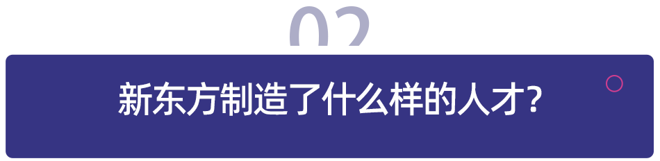
要理解新东方为什么留不住人，得先看清它培养cultivate[ˈkʌltɪveɪt] v. 培养出了什么样的人。我们梳理了 50 位具有代表性的「新东方系」创业者和职业经理人executive[ɪɡˈzekjətɪv] n. 职业经理人后发现，其中大部分人在离开新东方后，都实现了财富与职业地位的快速跃升，个人或企业已达到千万级以上规模。他们的成功路径pathway[ˈpɑːθweɪ] n. 路径，大致可以分为四类。
第一类是教育机构institution[ˌɪnstɪˈtjuːʃn] n. 机构创业者。
陈向东 2014 年离开新东方创办跟谁学（后更名高途），2019 年登陆纽交所，市值valuation[ˌvæljuˈeɪʃn] n. 市值一度超过新东方；沙云龙 创办朴新教育，2018 年在纽交所上市listing[ˈlɪstɪŋ] n. 上市，巅峰时期曾在全国 30 多个城市拥有 600 多个学习中心。
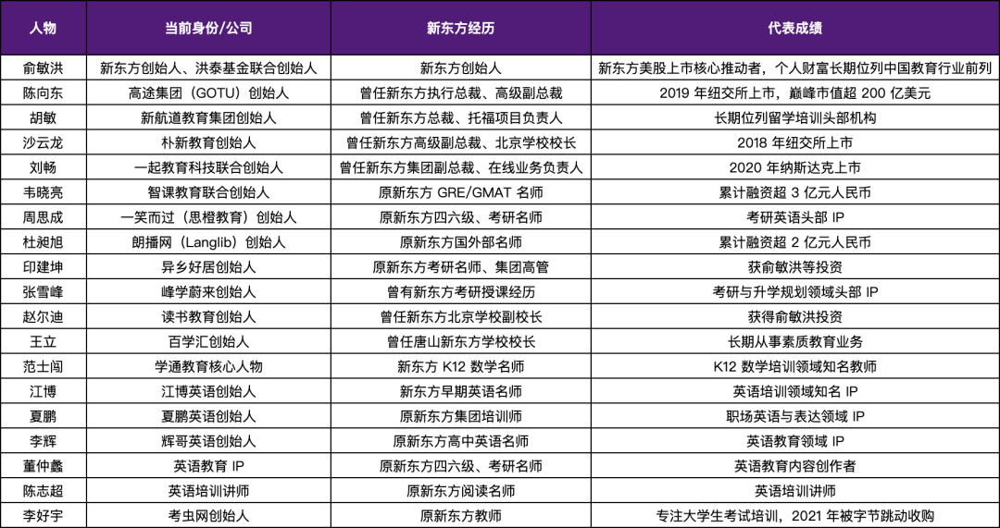
这类创业者最大的特点是，既懂教学又懂管理，能够将新东方标准化standardize[ˈstændədaɪz] v. 标准化的课程体系、管理体系与招生体系复制到新的赛道中。他们中的大多数在离开新东方后迅速完成扩张expand[ɪkˈspænd] v. 扩张，也推动了中国教育培训行业的地域下沉和品类扩展。
徐小平离开新东方后创办真格基金，投资invest[ɪnˈvest] v. 投资了小红书、聚美优品、ofo 等明星项目，累计管理基金规模超过百亿元；盛希泰创办洪泰基金fund[fʌnd] n. 基金，投资项目覆盖消费、科技、医疗等多个领域；江勇创办天使湾创投venture[ˈventʃə(r)] n. 创业投资，长期聚焦早期创业项目。
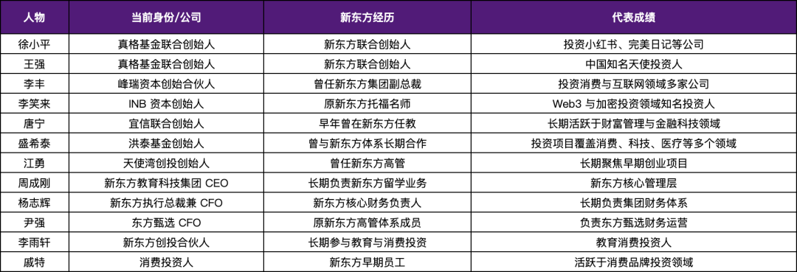
他们的成功，某种程度上来自教育行业长期训练出的用户洞察与系统思维mindset[ˈmaɪndset] n. 思维。教育本质是服务业sector[ˈsektə(r)] n. 行业，对用户需求的理解、对产品体验的把控、对运营效率的追求，这些能力迁移到投资领域，就是对项目的精准判断。
罗永浩的路径最具代表性representative[ˌreprɪˈzentətɪv] adj. 有代表性的。从英语培训到智能硬件hardware[ˈhɑːdweə(r)] n. 硬件，再到直播电商，他几乎踩中过去十几年中国互联网最重要的几轮内容创业浪潮。
李笑来则凭借《把时间当作朋友》等畅销书以及知识付费subscription[səbˈskrɪpʃn] n. 付费订阅业务，成为知识内容领域的重要 IP；许岑离开新东方后专注幻灯片slide[slaɪd] n. 幻灯片设计教学，在网易云课堂等平台积累了大量付费学员。
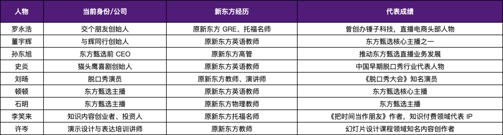
这类创业者最大的特点，是将教师的表达能力转化为了内容生产能力，并在直播、短视频、知识付费等新业态中重新完成商业化commercialize[kəˈmɜːʃlaɪz] v. 商业化。
第四类是垂直领域domain[dəˈmeɪn] n. 领域个人 IP。
近年来，越来越多教育从业者开始通过抖音、B 站、小红书等平台platform[ˈplætfɔːm] n. 平台建立个人品牌。在考研postgraduate[ˌpəʊstˈɡrædʒuət] n. 研究生、四六级、英语学习、升学规划等细分赛道中，一批教育 IP 迅速崛起。
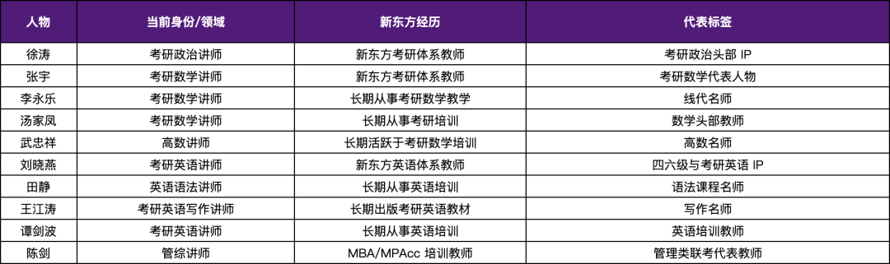
这类人才在细分领域深耕specialize[ˈspeʃəlaɪz] v. 深耕，打造出不可替代的个人影响力。在线上时代，这些个人品牌的商业价值mercantile[ˈmɜːkəntaɪl] adj. 商业的正在被不断放大。
这 50 个样本sample[ˈsɑːmpl] n. 样本背后，是新东方培养体系长期形成的三种核心能力。第一是表达expression[ɪkˈspreʃn] n. 表达能力。新东方教师入职后要经历试讲rehearsal[rɪˈhɜːsl] n. 试讲、磨课、演讲比赛等环节，每一堂课都会被反复打磨。如何讲故事、如何调动情绪、如何把复杂知识简单化，这些训练drill[drɪl] n. 训练的强度远超大多数企业。第二是用户consumer[kənˈsjuːmə(r)] n. 用户思维。教师要在课堂上持续保持学生注意力attention[əˈtenʃn] n. 注意力，就必须不断调整内容呈现方式；要提高续班率，就必须在教学之外提供情绪emotion[ɪˈməʊʃn] n. 情绪价值。第三是课程研发research[rɪˈsɜːtʃ] n. 研发能力。从考试大纲拆解到知识点打磨，从教材编写到课程迭代，新东方形成了一套成熟的标准化内容生产流程process[ˈprəʊses] n. 流程。
这三种能力都是高度可迁移的底层竞争力competitive[kəmˈpetətɪv] adj. 有竞争力的，不只适用于教育行业，也适用于今天的内容经济、直播电商和知识付费行业。这也是新东方「造人」体系systemic[sɪˈstiːmɪk] adj. 体系的最强大的地方——它培养出的，往往不是单一岗位人才，而是能够独立成长的人。
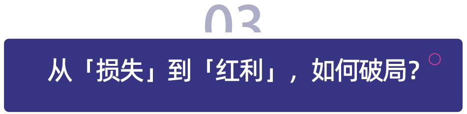
500 多位离职创业者背后，某种程度上也是中国教育行业最大的一批「人才红利dividend[ˈdɪvɪdend] n. 红利」。
这些离开新东方的人，后来又在教育、投资、内容创业、直播电商等领域重新创造generate[ˈdʒenəreɪt] v. 创造价值。但对于新东方自身而言，问题并不只是「人才流失」，而是原有的人才体系，正在遭遇个人 IP 时代的重构reconstruct[ˌriːkənˈstrʌkt] v. 重构。
过去，新东方的核心逻辑logic[ˈlɒdʒɪk] n. 逻辑是「平台成就名师」。教师需要依附校区、招生体系和品牌完成教学，机构天然掌握更强的话语权voice[vɔɪs] n. 话语权。但今天，短视频和直播平台让头部教师第一次具备了独立完成内容生产、用户沉淀和商业变现monetization[ˌmʌnɪtaɪˈzeɪʃn] n. 变现的能力。这意味着，平台如果仍然停留在「依靠reliance[rɪˈlaɪəns] n. 依靠；依赖头部个人带流量」的阶段，就一定会反复遭遇核心人才流失。因为当主播能够独立完成商业闭环时，平台给出的薪酬和资源，很难匹配个人单飞后的收益earnings[ˈɜːnɪŋz] n. 收益空间。
这也是为什么，东方甄选这一轮主播出走之后，行业industry[ˈɪndəstri] n. 行业真正讨论的已经不是「谁离职了」，而是平台未来到底应该依赖什么。对于新东方和东方甄选而言，真正的解法，首先是从「主播驱动」转向「供应链supplychain[səˈplaɪtʃeɪn] n. 供应链驱动」。过去几年，东方甄选最大的流量traffic[ˈtræfɪk] n. 流量核心始终是董宇辉等头部主播，但头部主播越强，平台对个人的依赖就越高。一旦主播离开，流量和用户心智就会迅速转移migrate[maɪˈɡreɪt] v. 转移。因此，平台必须建立主播无法独立复制replicate[ˈreplɪkeɪt] v. 复制的能力，而最核心的就是供应链、自营品牌和履约体系。
这也是为什么，东方甄选这两年持续加码rampup[ˈræmpʌp] n. 加码自营产品。相比纯直播间带货，自营体系意味着平台开始拥有真正属于自己的商品merchandise[ˈmɜːtʃəndaɪz] n. 商品能力、利润空间和用户复购体系。当用户购买的不再只是「谁在直播」，而是「东方甄选的产品」，平台才有机会降低reduce[rɪˈdjuːs] v. 降低对单一 IP 的依赖。实际上，直播电商行业已经出现明显趋势trend[trend] n. 趋势：平台价值正在从「流量组织能力」逐渐转向「供应链能力」。主播可以复制，但稳定的供应链、仓储履约和品控quality[ˈkwɒləti] n. 品质体系，很难被个人快速复制。
与此同时，平台也必须从「个人爆款」转向「矩阵matrix[ˈmeɪtrɪks] n. 矩阵化运营」。东方甄选过去的增长，很大程度上依赖超级主播带来的爆发力momentary[ˈməʊməntri] adj. 爆发性的，但超级主播模式天然不稳定。当前直播电商行业一个非常明显的变化，就是各个平台都在主动降低单一头部leading[ˈliːdɪŋ] adj. 头部的主播占比。无论是东方甄选、交个朋友还是谦寻，都在尝试建立多账号account[əˈkaʊnt] n. 账号、多主播、多垂类的矩阵体系，本质上就是把平台流量从「单点依赖」转向「系统运营」。因为只有当平台能够持续制造新主播，而不是依赖某一个主播时，组织才真正拥有抗风险resilient[rɪˈzɪliənt] adj. 抗风险的能力。
更深层的问题，则是平台与人才之间关系dynamic[daɪˈnæmɪk] n. 关系的变化。过去，教育机构和 MCN 更像传统雇佣关系，但今天，头部主播和内容创作者越来越接近「合伙人」partner[ˈpɑːtnə(r)] n. 合伙人。对于顶级人才而言，最敏感的问题已经不只是薪酬，而是自主权autonomy[ɔːˈtɒnəmi] n. 自主权、收益分配和长期发展空间。新东方历史上，无论是徐小平、王强，还是后来大量离开的名师，本质上都绕不开同一个问题：个人贡献与平台分配之间如何平衡balance[ˈbæləns] v. 平衡。
因此，平台未来很难再单纯依靠管理去「留人」，而是需要通过股权stock[stɒk] n. 股权、业务合伙、品牌共建等方式，让核心人才真正成为利益共同体。俞敏洪所说的「人才不是被捆住翅膀的鸟」，其实也意味着，新东方已经意识到，在今天的内容与直播时代，人才流动mobility[məʊˈbɪləti] n. 流动本身已经不可逆。真正重要的，不是如何阻止prevent[prɪˈvent] v. 阻止离开，而是平台能否在人才不断流动的情况下，依然持续制造内容、沉淀用户，并建立不依赖单一个体的核心能力。
这或许才是新东方二十多年之后，真正需要完成的一次转型transformation[ˌtrænsfəˈmeɪʃn] n. 转型：从一家依赖名师的平台，变成一家能够持续生产名师、但又不被名师绑定的平台。
2026 年 6 月，亚太地区规模最大的教育盛会gala[ˈɡɑːlə] n. 盛会「学与教博览」将在中国香港会议展览中心盛大举办，点击下方图片，了解更多！
👉 香港展会注册链接link[lɪŋk] n. 链接：https://registration.ltexpo.org/?promotion_code=Rene
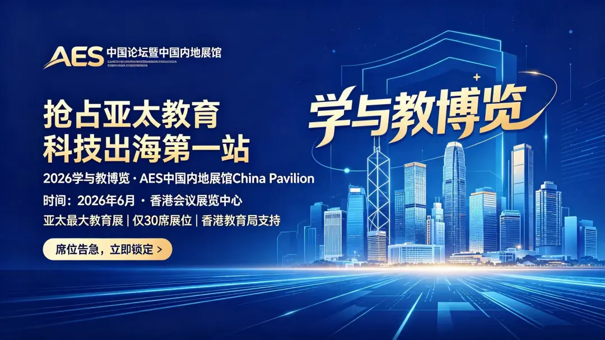
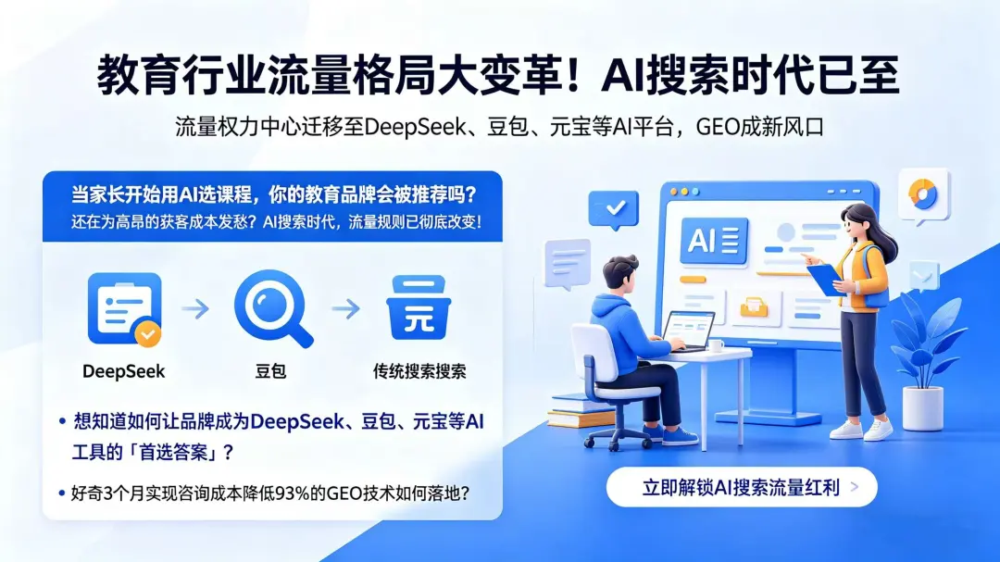
🌐 教育行业流量格局landscape[ˈlændskeɪp] n. 格局大变革！
AI 搜索时代已至，扫码下方二维码添加好友并备注remark[rɪˈmɑːk] n. 备注「GEO」，
立即解锁unlock[ˌʌnˈlɒk] v. 解锁 AI 搜索流量红利
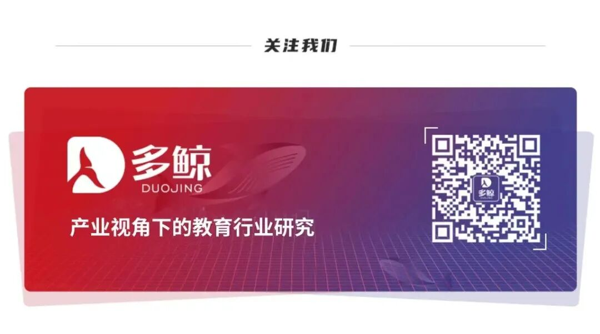
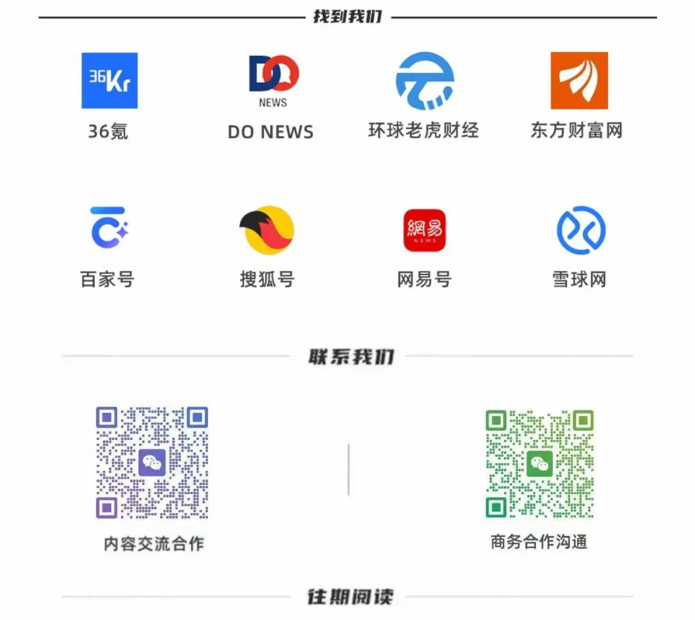
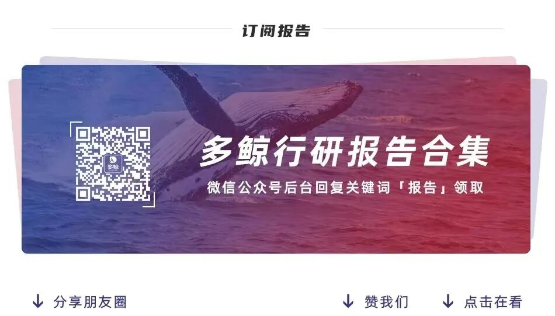